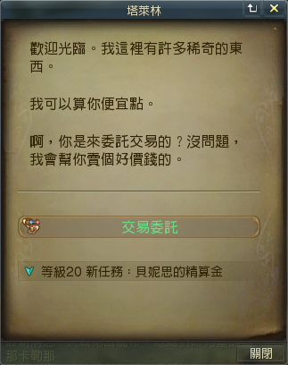

分享自製字體包給想看清楚劇情的碰油-增加Size選擇
【警語】
此部分涉及改檔範疇，但並不會破壞遊戲平衡，若因此而遭到鎖定，本人不付任何損失賠償，請自行斟酌是否繼續使用。
分為兩個部分，一是對話的字體大小，二是介面的字體大小，可以一、二同時使用，也可以使用繁中化包(不會互相衝突)。
我個人是使用L號+官方字體的介面的調整，不知道為什麼我的口味好像換了，雖然圓角的也不錯，但這次回鍋都用有菱角的字。
首先是純粹更改對話的文字大小：(不更改字體，也不包含介面，只有對話框的文字Size)
記錄：10/28號官方更新後，對話視窗(dialog)的字變小了，目前有解了
使用方法：(請選擇一種Size就好)
將檔案dataUIQuestDialogFontSize-15/17/19/21.pak 放在 AION4.7/l10n/CHT/data 底下
檔案連結：
S號(官方大小-15px)
M號(17px)
L號(19px)
XL號(21px)
效果展示：
S號(官方大小-15px)
M號(17px)
L號(19px)
XL號(21px)

以下是更改整體介面字體及大小：
主要是提供給1366x768螢幕的玩家，因為Full HD(1920x1080)官方的字體大小剛剛好。
如果1080p的碰油還是想要使用，可以搭配遊戲裡的介面調整到0.8左右效果會比較好。
使用方法：
將檔案zfont.pak 放在 AION4.7/l10n/CHT/data 底下
檔案連結：
檔案一（字體有部分是套用早期版本的AION的字體，比較圓滑清晰）
檔案二（使用遊戲原本字體，有菱角且容量小）
開發人員用資源(台服4.8)：
效果展示：
1366x768
登入畫面
遊戲畫面
1280x720
遊戲畫面
用完後都發現視力增長了0.2 ，太棒了 (x